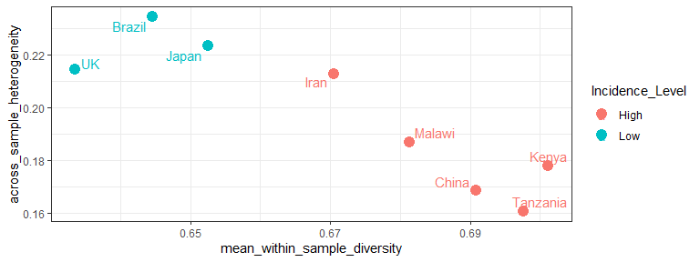
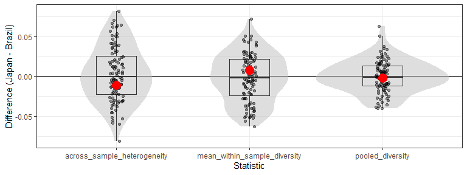
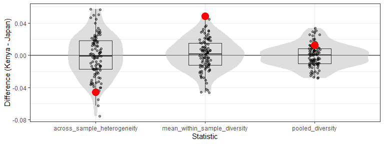

The R package sigvar implements signature variability analysis, a framework for the analyis of mutational signature activities within and across cancer samples. The sigvar package contains the following core functions:
sigvar: Conduct signature variability analysis on a data set: compute the within-sample diversity and across-sample heterogeneity of mutational signature activity in one or multiple populations of samplessigboot: Use bootstrapping to statistically compare the within-sample diversity and across-sample heterogeneity of the mutational signature activity between two or more groups of tumor samples
Installation
You can install the development version of sigvar from GitHub with:
# install.packages("devtools")
devtools::install_github("MaikeMorrison/sigvar")The package requires packages dplyr, ggplot2, rlang, tidyr, and readr. They will all be installed automatically by the command above. Installation time ranges from 1 to 5 minutes depending on whether dependencies also need to be installed. Run time is expected to be a few minutes on a typical desktop computer.
The package has been tested on R version 4.1.2 on a redhat linux platform and a windows 10 pro platform. The package is available under the MIT license.
Example analysis
In this example, we apply signature variability analysis (SVA) to data from Moody et al. (2021). This data set contains 552 esophageal squamous cell carcinoma (ESCC) samples collected across eight countries which vary dramatically in their incidence of ESCC. Moody et al. (2021) reported the activities of 43 SBS, DBS, and ID mutational signatures for each sample.
library(sigvar)
library(dplyr)
library(ggplot2)
head(ESCC_sig_activity)
#> # A tibble: 6 x 46
#> Country Incidence_Level Sample SBS1 SBS2 SBS3 SBS4 SBS5 SBS8 SBS10a
#> <ord> <chr> <chr> <dbl> <dbl> <dbl> <dbl> <dbl> <dbl> <dbl>
#> 1 Kenya High PD37727a 0.148 0 0 0 0 0 0
#> 2 Kenya High PD37728a 0.156 0.207 0 0 0 0 0
#> 3 Kenya High PD37729a 0 0.196 0 0 0 0 0
#> 4 Kenya High PD37730a 0.165 0.234 0 0 0 0 0
#> 5 Kenya High PD37731a 0 0.317 0 0 0 0 0
#> 6 Kenya High PD37733a 0.134 0.212 0 0 0 0 0
#> # i 36 more variables: SBS10b <dbl>, SBS12 <dbl>, SBS13 <dbl>, SBS14 <dbl>,
#> # SBS15 <dbl>, SBS16 <dbl>, SBS17a <dbl>, SBS17b <dbl>, SBS18 <dbl>,
#> # SBS20 <dbl>, SBS22 <dbl>, SBS23 <dbl>, SBS25 <dbl>, SBS28 <dbl>,
#> # SBS30 <dbl>, SBS33 <dbl>, SBS34 <dbl>, SBS39 <dbl>, SBS40 <dbl>,
#> # SBS44 <dbl>, SBS288P <dbl>, DBS2 <dbl>, DBS4 <dbl>, DBS6 <dbl>, DBS9 <dbl>,
#> # DBS78D <dbl>, ID1 <dbl>, ID2 <dbl>, ID3 <dbl>, ID4 <dbl>, ID6 <dbl>,
#> # ID8 <dbl>, ID9 <dbl>, ID11 <dbl>, ID14 <dbl>, ID17 <dbl>Each row of this data set reports the relative activity of each mutational signature for one sample. Because we are analyzing relative signature activities, each row sums to 1.
Signature variability analysis can be conducted in one line of code:
| Country | across_sample_heterogeneity | mean_within_sample_diversity |
|---|---|---|
| Kenya | 0.1778148 | 0.7011235 |
| Iran | 0.2126657 | 0.6705337 |
| Tanzania | 0.1606487 | 0.6976021 |
| China | 0.1684907 | 0.6908129 |
| Japan | 0.2234567 | 0.6525885 |
| Malawi | 0.1867597 | 0.6813242 |
| Brazil | 0.2344654 | 0.6446411 |
| UK | 0.2143285 | 0.6335159 |
Signature variability analysis quantifies both the mean signature diversity within each sample, as well as the heterogeneity in signature activities across samples. Both variability statistics range between 0 and 1.
If we add to our SVA results a column corresponding to the incidence of each country, we are able to determine if signature heterogeneity or diversity are associated with ESCC incidence.
sva_incidence = ESCC_sig_activity %>%
transmute(Country = as.character(Country),
Incidence_Level) %>%
distinct %>%
right_join(sva)
knitr::kable(sva_incidence)| Country | Incidence_Level | across_sample_heterogeneity | mean_within_sample_diversity |
|---|---|---|---|
| Kenya | High | 0.1778148 | 0.7011235 |
| Iran | High | 0.2126657 | 0.6705337 |
| Tanzania | High | 0.1606487 | 0.6976021 |
| China | High | 0.1684907 | 0.6908129 |
| Japan | Low | 0.2234567 | 0.6525885 |
| Malawi | High | 0.1867597 | 0.6813242 |
| Brazil | Low | 0.2344654 | 0.6446411 |
| UK | Low | 0.2143285 | 0.6335159 |
ggplot(sva_incidence,
aes(x = mean_within_sample_diversity,
y = across_sample_heterogeneity,
color = Incidence_Level)) +
geom_point(size = 4) +
ggrepel::geom_text_repel(aes(label = Country)) +
theme_bw()
We see that high-ESCC-incidence countries have more within-sample signature diversity and less across-sample heterogeneity than low-incidence countries.
Note that this difference in diversity is missed when we analyze only country-level mean signature activities:
plot_dots(sig_activity = ESCC_sig_activity,
K = 43, group = "Country",
facet = "Incidence_Level",
pivot = TRUE)
We use bootstrapping (sigboot) to statistically compare the signature diversity or heterogeneity of cancer samples. For example, the below code compares SVA results among the low-incidence countries.
low_inc_boot = sigboot(sig_activity = ESCC_sig_activity %>%
filter(Incidence_Level == "Low"),
K = 43,
group = "Country",
n_replicates = 100,
seed = 1)In short, the bootstrapping algorithm involves taking a pair of populations (for example, Japan and Brazil), scrambling their samples up many times (with some samples randomly duplicated and others omitted), conducting SVA on the scrambled populations, and then comparing the difference between SVA results for each scrambled population (black dots) to the true difference (red dots). We can see in the below plot that the red dots fall in the middle of the black dots, suggesting that there is not a significant difference in SVA results between Japan and Brazil.
low_inc_boot$bootstrap_distribution_plot$`Japan--Brazil`
This lack of significance is quantified by the two-sided P-value comparing each pair of countries:
low_inc_boot$P_values %>% data.frame() %>% select(-pooled_diversity)
#> group_1 group_2 across_sample_heterogeneity mean_within_sample_diversity
#> 1 Japan Brazil 0.77 0.78
#> 2 Japan UK 0.91 0.66
#> 3 Brazil UK 0.71 0.81However, suppose we compare a high-incidence country like Kenya to a low-incidence country like Japan:
comparison_boot = sigboot(sig_activity = ESCC_sig_activity %>%
filter(Country %in% c("Japan", "Kenya")),
K = 43,
group = "Country",
n_replicates = 100,
seed = 1)
comparison_boot$bootstrap_distribution_plot
We see that, for the SVA statistics across_sample_heterogeneity and mean_within_sample_diversity, the red dots fall far outside of the range of most of the black dots, suggesting that there is a significant difference in SVA results between Kenya and Japan. This difference is reflected by low two-sided P-values:
comparison_boot$P_values %>% data.frame() %>% select(-pooled_diversity)
#> group_1 group_2 across_sample_heterogeneity mean_within_sample_diversity
#> 1 Kenya Japan 0.08 <0.01